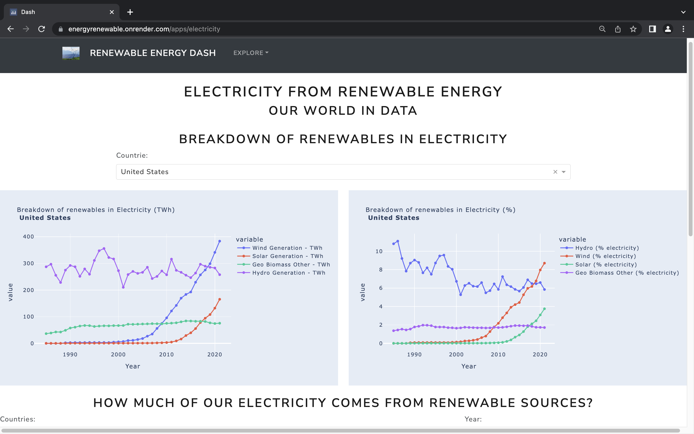
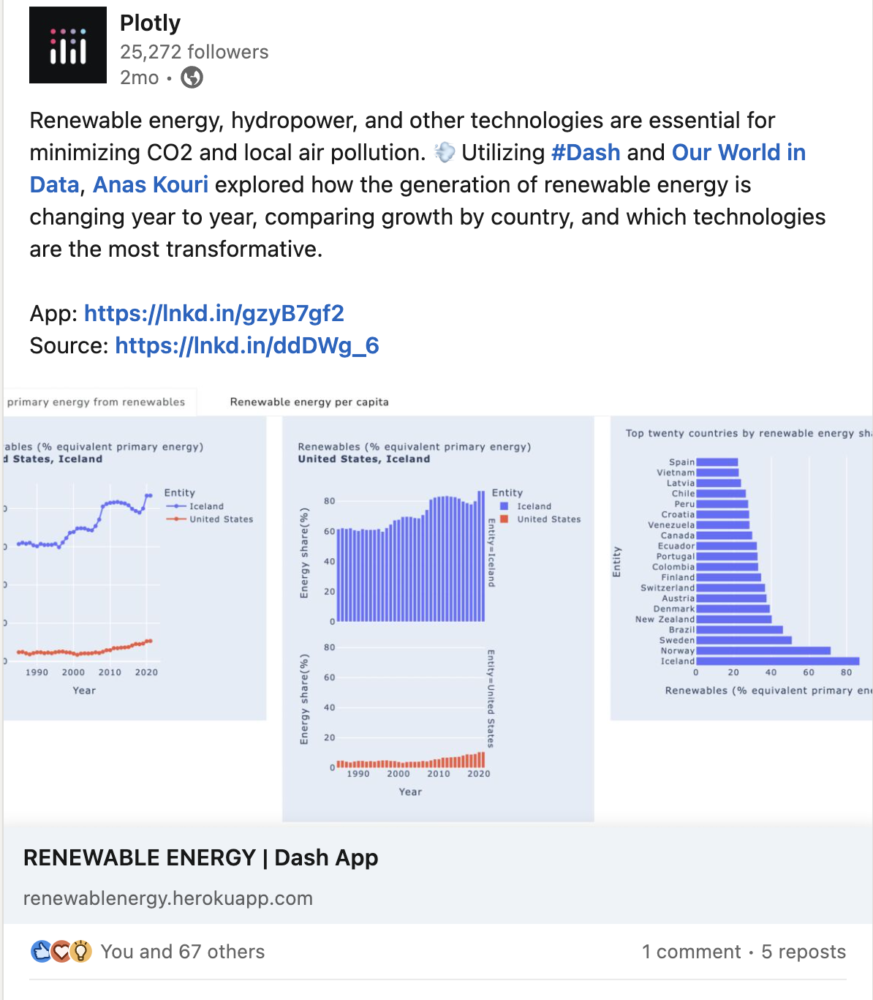
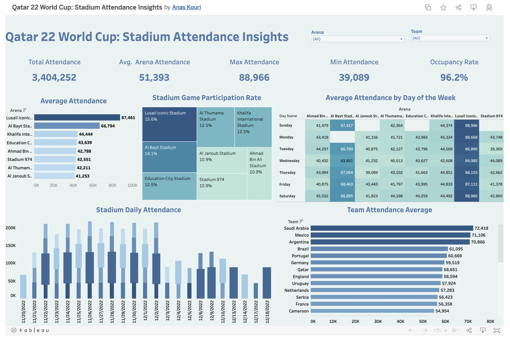

Porfolio
Here is a selection of my past projects.
CREDIT CARD APPLICATIONS
Machine Learning
Credit Card Applications
Year: 2021
Brooklyn, NY
Machine Learning using Python
Commercial banks receive a lot of applications for credit cards. Many of them get rejected for many reasons, like high loan balances,
low income levels, or too many inquiries on an individual's credit report, for example. Manually analyzing these applications is mundane,
error-prone, and time-consuming (and time is money!).
Luckily, this task can be automated with the power of machine learning and pretty much every commercial bank does so nowadays.
In this notebook, we will build an automatic credit card approval predictor using machine learning techniques, just like the real banks do.
We'll use the Credit Card Approval dataset from the UCI Machine Learning Repository.
- First, we will start off by loading and viewing the dataset.
- We will see that the dataset has a mixture of both numerical and non-numerical features, that it contains values from different ranges, plus that it contains a number of missing entries.
- We will have to preprocess the dataset to ensure the machine learning model we choose can make good predictions.
- After our data is in good shape, we will do some exploratory data analysis to build our intuitions.
- Finally, we will build a machine learning model that can predict if an individual's application for a credit card will be accepted.
Technologies and Topics
- Machine learning
- Advanced python programming
- Data Analysis
- Git
Renewable Energy Dashboard
Data Visualization using Python

Plotly posted my app on linkedin

Data Visualization using Python
Year: 2022
Brooklyn, NY
Renewable Energy Dashboard
Fossil fuels have been the primary source of energy for most nations since the Industrial Revolution, leading to negative impacts on the environment and human health. The burning of fossil fuels accounts for approximately 75% of global greenhouse gas emissions, which causes an estimated 5 million premature deaths each year. It is necessary for the world to move towards low-carbon energy sources and renewable technologies to reduce CO2 emissions and local air pollution. To understand the growth of renewable energy in different countries and the most promising technologies for transforming our energy mix, I created a web application using Dash-Plotly and Python and deployed it on Render.
Link:
Web App Link .
Data source:
Our Wolrd in Data.
Code:
Github.
Technologies
- Ploty, Dash
- Advanced python programming
- Pandas, Numpy
- Git
World Cup Qatar 22 Attendance Dashboard
Data Analysis and Visualization using SQL & Tableau

Data Analysis and Visualization using SQL & Tableau
Year: 2023
Brooklyn, NY
World Cup Qatar 22: Stadium Attendance Insights dashboard
I am thrilled to showcase my latest data visualization project, the World Cup Qatar 22: Stadium Attendance Insights dashboard. Using SQL and Tableau, I was able to uncover and present key insights on attendance such as average attendance per stadium, total attendance, maximum and minimum attendance, and occupancy rates. Additionally, I also included the average attendance for each team throughout the tournament. Check out the interactive dashboard and the SQL code on the description link provided below.
Link:
Link to the dashboard .
Data source:
Kaggle.
Code:
Link to GitHub repository.
Technologies
- SQL
- Tableau
- Git

Bitcoin and Cryptocurrencies
Data analysis in Python
Bitcoin AND Cryptocurrencies
Year: 2021
Brooklyn, NY
Data Analysis in Python
Since the launch of Bitcoin in 2008, hundreds of similar projects based on the blockchain technology have emerged.
We call these cryptocurrencies (also coins or cryptos in the Internet slang). Some are extremely valuable nowadays,
and others may have the potential to become extremely valuable in the future1. In fact, on the 6th of December of 2017,
Bitcoin has a market capitalization above $200 billion.
I have analyzed and visualized data related to Bitcoin and cryptocurrency using python.
By leveraging various python libraries such as pandas and matplotlib,
I was able to extract insights from the data and present them in a clear and visually appealing manner.
I was able to manipulate and clean the data to suit my analysis needs,
and then use various visualization techniques to represent the results in a clear and effective way.
Overall, using python has been a powerful tool in my data analysis and visualization journey,
and has allowed me to gain a deeper understanding of the trends and patterns within the cryptocurrency market.
For more details, here's the github repo related to the project.
Technologies
- Data Analysis
- Python
- Data Visualization
- Git

Apple Inc. Research Report
Background and Situation Analysis
APPLE INC. REASEARCH REPORT
Year: 2022
Brooklyn College, NY
Background and Situation Analysis
Apple is a technology company that makes a range of products, such as smartphones, computers, tablets, and TVs.
It was founded in 1976 and is known for its ability to design and build operating systems, hardware, application software, and services.
Apple differentiates itself from competitors like Samsung, Google, and Amazon by including hardware and software in its products
and designing them to be basic, user-friendly, integrated, and visually appealing.
Apple has a strong brand following and its mission statement emphasizes customer satisfaction,
product quality, and continuous improvement, as well as its responsibilities to the community.
However, the company has faced criticism for its tax avoidance strategies, which involve sending profits to tax haven countries like Ireland.
Link for the report.
Technologies
- Data Analysis
- Data visualization
- SPSS
Contact
Feel free to contact me if you have any question or just to say hi, I’ll try my best to get back to you!